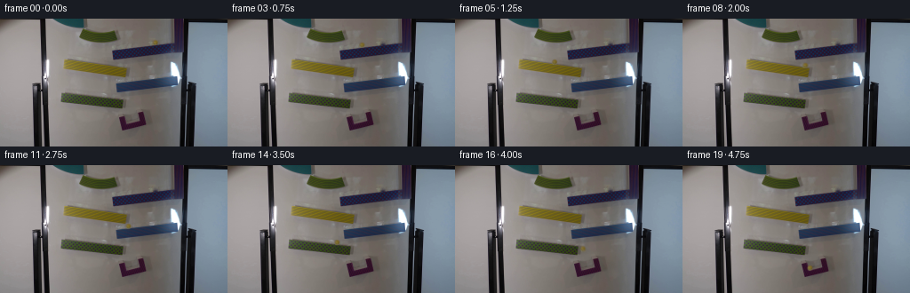
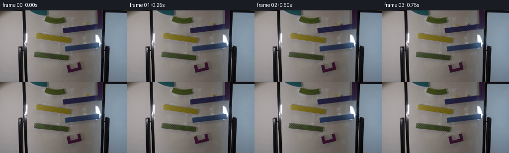
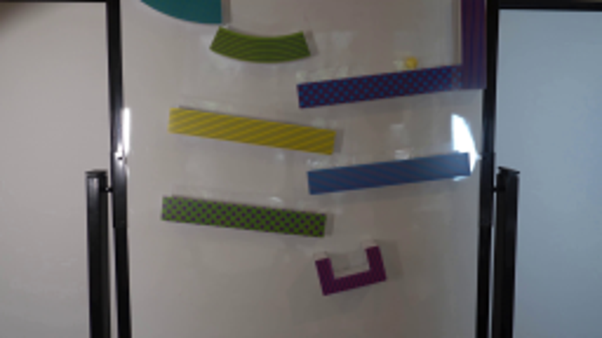
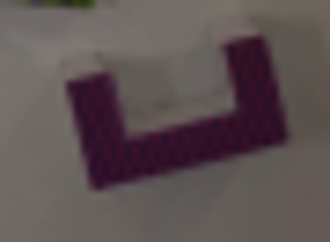
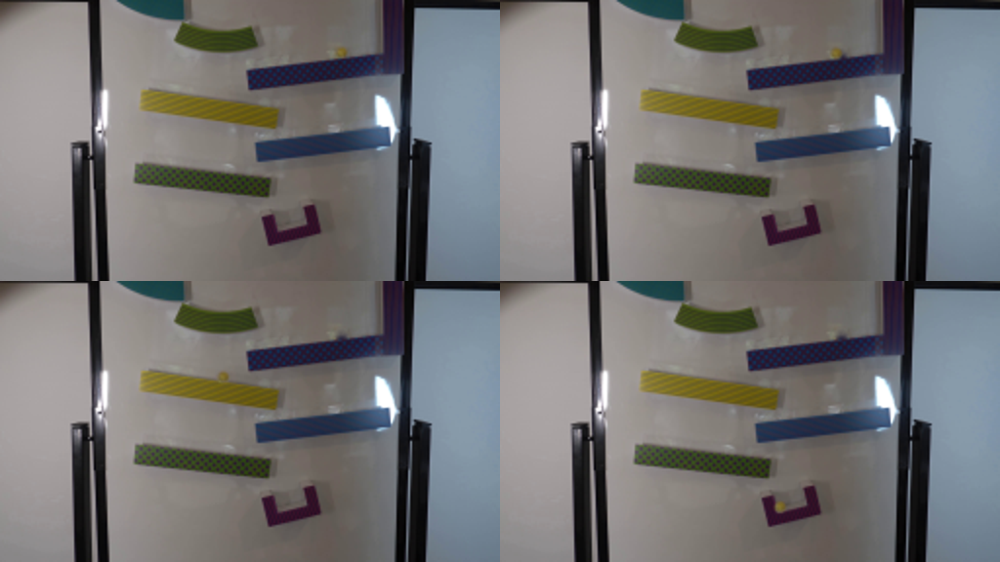

CODING AGENTS AS PIXEL WORLD MODELS
traex/GPT-6.1-Sol · 0107
点击播放 · 原生 RGB 像素
逐轮保存的候选
回放视频、检查图与代码变化。
每份候选均可单独播放。实际图片检查记录在下方工具轨迹中。
候选 01播放与检查图
点击播放 · 原生 RGB 像素


展开代码变化
--- 上一保存版本
+++ 本次保存版本
@@ -0,0 +1,158 @@
+from pathlib import Path
+import numpy as np
+from PIL import Image
+import cv2
+from scipy.ndimage import gaussian_filter
+import artifact_io
+
+ROOT = Path(__file__).resolve().parent
+FPS = 4
+R = 2.65
+G = 1050.0
+
+# The fixed photograph is the background; only the glass sphere is animated.
+source = np.asarray(Image.open(ROOT / 'first_frame.png').convert('RGB'))
+yy, xx = np.mgrid[:144, :256]
+start = np.array([174.3, 26.65])
+remove_mask = (((xx-start[0])/3.75)**2 + ((yy-start[1])/3.9)**2 < 1).astype(np.uint8)*255
+# Do not disturb the patterned lip immediately below the sphere.
+remove_mask[yy >= 30] = 0
+background = cv2.inpaint(source, remove_mask, 4, cv2.INPAINT_TELEA)
+
+# Four inclined tracks, specified by the photographed upper edges.
+tracks = [
+ (126.6, 34.65, -0.1116, 126.6),
+ (72.3, 45.65, 0.1404, 141.8),
+ (130.6, 72.55, -0.1133, 130.6),
+ (69.1, 83.45, 0.1071, 138.3),
+]
+segments = []
+clock = 0.0
+
+def rolling(x, vx, track, initial_y=None):
+ global clock
+ anchor, height, slope, end = track
+ ax = G * slope / (1+slope*slope) * 5/7
+ roots = np.roots([.5*ax, vx, x-end])
+ duration = min(float(v.real) for v in roots if abs(v.imag)<1e-8 and v.real>1e-7)
+ y = height+slope*(x-anchor)-R
+ segments.append((clock, clock+duration, 'roll', (x,y,vx,ax,slope,initial_y)))
+ clock += duration
+ return np.array([end, height+slope*(end-anchor)-R]), np.array([vx+ax*duration, slope*(vx+ax*duration)])
+
+def falling(p, velocity, track):
+ global clock
+ anchor, height, slope, end = track
+ c = p[1] - (height+slope*(p[0]-anchor)-R)
+ b = velocity[1]-slope*velocity[0]
+ duration = (-b+np.sqrt(b*b-2*G*c))/G
+ segments.append((clock, clock+duration, 'fall', (p.copy(), velocity.copy())))
+ clock += duration
+ p = p+velocity*duration+np.array([0,.5*G*duration*duration])
+ velocity = velocity+np.array([0,G*duration])
+ # A dropping ball loses most of its tangential momentum on the next lip.
+ vx = .075*(velocity[0]+slope*velocity[1])/(1+slope*slope)
+ return p, vx
+
+p,v = rolling(start[0], 0., tracks[0], initial_y=start[1])
+for track in tracks[1:]:
+ p,vx=falling(p,v,track)
+ p,v=rolling(p[0],vx,track)
+
+cup_floor=(141.0,118.45,-.249,0)
+p,vx=falling(p,v,cup_floor)
+catch_time=clock
+# Resolve the small, dissipative rebounds inside the U-shaped catcher.
+# The right wall prevents escape, and the inclined bottom leads to the left corner.
+cup_dt=1/2000
+cup=[]
+x=float(p[0]); speed=float(vx)*1.6
+for i in range(int(1.3/cup_dt)+1):
+ elapsed=i*cup_dt
+ acc=G*cup_floor[2]/(1+cup_floor[2]**2)*5/7
+ speed += acc*cup_dt
+ x += speed*cup_dt
+ if x > 153.0:
+ x=153.0; speed=-abs(speed)*.28
+ if x < 143.0:
+ x=143.0; speed=abs(speed)*.23
+ if abs(speed)<3.5: speed=0.
+ if x<=143.02 and abs(speed)<3.5:
+ x=143.; speed=0.
+ y=cup_floor[1]+cup_floor[2]*(x-cup_floor[0])-R
+ # First landing produces a brief, low bounce before rolling in the cup.
+ y-= .85*np.exp(-elapsed*16)*max(0,np.sin(elapsed*40))
+ cup.append((x,y))
+cup=np.array(cup)
+
+def position(t):
+ if t<=0: return start.copy()
+ if t>=catch_time:
+ j=min(len(cup)-1,int((t-catch_time)/cup_dt))
+ return cup[j]
+ for begin,end,kind,params in segments:
+ if t<=end:
+ u=max(0,t-begin)
+ if kind=='fall':
+ p,v=params
+ return p+v*u+np.array([0,.5*G*u*u])
+ x,y,vx,ax,m,initial_y=params
+ dx=vx*u+.5*ax*u*u
+ ynew=y+m*dx
+ if initial_y is not None:
+ ynew += (initial_y-y)*np.exp(-u*18)
+ return np.array([x+dx,ynew])
+ return cup[-1]
+
+# Preserve the photographed coloration and optical softness of the small amber ball.
+# A soft alpha matte separates its original appearance from the board color.
+S=5
+sy,sx=np.mgrid[:144*S,:256*S]/S
+# Use pixel centers in the supersampled image.
+sx += .5/S-.5; sy += .5/S-.5
+base_hi=cv2.resize(background.astype(np.float32),(256*S,144*S),interpolation=cv2.INTER_CUBIC)
+orig_hi=cv2.resize(source.astype(np.float32),(256*S,144*S),interpolation=cv2.INTER_CUBIC)
+rad=np.sqrt((sx-start[0])**2+(sy-start[1])**2)
+matte=np.clip((R+.6-rad)/1.0,0,1)
+# Smooth matte at the edge, without introducing a crisp synthetic boundary.
+matte=gaussian_filter(matte,.95)
+# Decontaminate the photograph against the repaired background.
+object_color=np.clip((orig_hi-(1-matte[...,None])*base_hi)/np.maximum(matte[...,None],.055),0,255)
+# Extract a small sprite only; translations keep every other scene pixel fixed.
+cx=int(round(start[0]*S)); cy=int(round(start[1]*S)); half=23
+sprite_alpha=matte[cy-half:cy+half+1,cx-half:cx+half+1].copy()
+sprite_premult=object_color[cy-half:cy+half+1,cx-half:cx+half+1]*sprite_alpha[...,None]
+
+# Photographic translucent sphere, with modest wall shadow beneath it.
+def render_ball(p):
+ out=base_hi.copy()
+ # The marble has a diffuse low-contrast shadow on the board.
+ px,py=p
+ shadow=np.exp(-.5*(((sx-(px+1.3))/2.35)**2+((sy-(py+1.0))/2.05)**2))*.065
+ out *= (1-shadow[...,None])
+ tx=px*S-cx; ty=py*S-cy
+ a=cv2.warpAffine(sprite_alpha,np.array([[1,0,cx-half+tx],[0,1,cy-half+ty]],np.float32),(256*S,144*S),flags=cv2.INTER_LINEAR)
+ rgb=cv2.warpAffine(sprite_premult,np.array([[1,0,cx-half+tx],[0,1,cy-half+ty]],np.float32),(256*S,144*S),flags=cv2.INTER_LINEAR)
+ out=out*(1-a[...,None])+rgb
+ return cv2.resize(out,(256,144),interpolation=cv2.INTER_AREA)
+
+frames=[source.copy()]
+for frame in range(1,20):
+ t=frame/FPS
+ # A brief exposure integrates the moving marble but not the locked-off scene.
+ exposure=.021
+ samples=[render_ball(position(t+offset)) for offset in np.linspace(-exposure/2,exposure/2,5)]
+ image=np.clip(np.mean(samples,axis=0),0,255).astype(np.uint8)
+ # Avoid resampling the background: exact original pixels outside the small edit regions.
+ p=position(t)
+ live=((xx-p[0])**2+(yy-p[1])**2)<7.7**2
+ changed=(remove_mask>0)|live
+ clean=source.copy()
+ clean[changed]=image[changed]
+ frames.append(clean)
+frames=np.stack(frames)
+artifact_io.save(frames,ROOT)
+if __name__ == '__main__':
+ print('Ramp transitions:',[(round(a,3),round(b,3),k) for a,b,k,_ in segments])
+ print('Catch:',round(catch_time,3))
+ print('Centers:',[(i,position(i/FPS).round(2).tolist()) for i in range(20)])
候选 02播放与检查图
点击播放 · 原生 RGB 像素
展开代码变化
--- 上一保存版本
+++ 本次保存版本
@@ -74,11 +74,11 @@
x += speed*cup_dt
if x > 153.0:
x=153.0; speed=-abs(speed)*.28
- if x < 143.0:
- x=143.0; speed=abs(speed)*.23
+ if x < 144.2:
+ x=144.2; speed=abs(speed)*.23
if abs(speed)<3.5: speed=0.
- if x<=143.02 and abs(speed)<3.5:
- x=143.; speed=0.
+ if x<=144.22 and abs(speed)<3.5:
+ x=144.2; speed=0.
y=cup_floor[1]+cup_floor[2]*(x-cup_floor[0])-R
# First landing produces a brief, low bounce before rolling in the cup.
y-= .85*np.exp(-elapsed*16)*max(0,np.sin(elapsed*40))
可观测工具轨迹
实际执行的命令与返回图片。
命令 1exit 0
/bin/bash -lc "ls -la && cat prompt.txt && printf '\\n--- RULES ---\\n' && cat GENERATION_RULES.md"
命令 2exit 0
/bin/bash -lc "cat artifact_io.py && python - <<'PY'
from PIL import Image
im=Image.open('first_frame.png'); print(im.size); im.resize((1024,576)).save('.tmp/enlarged.png')
PY"命令 3exit 0
/bin/bash -lc "python - <<'PY'
from PIL import Image
im=Image.open('first_frame.png'); im.crop((120,15,205,44)).resize((1020,348)).save('.tmp/top.png'); im.crop((125,100,170,133)).resize((540,396)).save('.tmp/cup.png')
PY"命令 4exit 0
/bin/bash -lc "python - <<'PY'
import importlib.util
for m in ['cv2','scipy','numpy','PIL']:print(m, bool(importlib.util.find_spec(m)))
from PIL import Image
import numpy as np
im=np.array(Image.open('first_frame.png'));print(im[22:33,169:180])
PY"命令 5exit 0
/bin/bash -lc "cat > generate.py <<'PY'
from pathlib import Path
import numpy as np
from PIL import Image
import cv2
from scipy.ndimage import gaussian_filter
import artifact_io
ROOT = Path(__file__).resolve().parent
FPS = 4
R = 2.65
G = 1050.0
# The fixed photograph is the background; only the glass sphere is animated.
source = np.asarray(Image.open(ROOT / 'first_frame.png').convert('RGB'))
yy, xx = np.mgrid[:144, :256]
start = np.array([174.3, 26.65])
remove_mask = (((xx-start[0])/3.75)**2 + ((yy-start[1])/3.9)**2 < 1).astype(np.uint8)*255
# Do not disturb the patterned lip immediately below the sphere.
remove_mask[yy >= 30] = 0
background = cv2.inpaint(source, remove_mask, 4, cv2.INPAINT_TELEA)
# Four inclined tracks, specified by the photographed upper edges.
tracks = [
(126.6, 34.65, -0.1116, 126.6),
(72.3, 45.65, 0.1404, 141.8),
(130.6, 72.55, -0.1133, 130.6),
(69.1, 83.45, 0.1071, 138.3),
]
segments = []
clock = 0.0
def rolling(x, vx, track, initial_y=None):
global clock
anchor, height, slope, end = track
ax = G * slope / (1+slope*slope) * 5/7
roots = np.roots([.5*ax, vx, x-end])
duration = min(float(v.real) for v in roots if abs(v.imag)<1e-8 and v.real>1e-7)
y = height+slope*(x-anchor)-R
segments.append((clock, clock+duration, 'roll', (x,y,vx,ax,slope,initial_y)))
clock += duration
return np.array([end, height+slope*(end-anchor)-R]), np.array([vx+ax*duration, slope*(vx+ax*duration)])
def falling(p, velocity, track):
global clock
anchor, height, slope, end = track
c = p[1] - (height+slope*(p[0]-anchor)-R)
b = velocity[1]-slope*velocity[0]
duration = (-b+np.sqrt(b*b-2*G*c))/G
segments.append((clock, clock+duration, 'fall', (p.copy(), velocity.copy())))
clock += duration
p = p+velocity*duration+np.array([0,.5*G*duration*duration])
velocity = velocity+np.array([0,G*duration])
# A dropping ball loses most of its tangential momentum on the next lip.
vx = .075*(velocity[0]+slope*velocity[1])/(1+slope*slope)
return p, vx
p,v = rolling(start[0], 0., tracks[0], initial_y=start[1])
for track in tracks[1:]:
p,vx=falling(p,v,track)
p,v=rolling(p[0],vx,track)
cup_floor=(141.0,118.45,-.249,0)
p,vx=falling(p,v,cup_floor)
catch_time=clock
# Resolve the small, dissipative rebounds inside the U-shaped catcher.
# The right wall prevents escape, and the inclined bottom leads to the left corner.
cup_dt=1/2000
cup=[]
x=float(p[0]); speed=float(vx)*1.6
for i in range(int(1.3/cup_dt)+1):
elapsed=i*cup_dt
acc=G*cup_floor[2]/(1+cup_floor[2]**2)*5/7
speed += acc*cup_dt
x += speed*cup_dt
if x > 153.0:
x=153.0; speed=-abs(speed)*.28
if x < 143.0:
x=143.0; speed=abs(speed)*.23
if abs(speed)<3.5: speed=0.
if x<=143.02 and abs(speed)<3.5:
x=143.; speed=0.
y=cup_floor[1]+cup_floor[2]*(x-cup_floor[0])-R
# First landing produces a brief, low bounce before rolling in the cup.
y-= .85*np.exp(-elapsed*16)*max(0,np.sin(elapsed*40))
cup.append((x,y))
cup=np.array(cup)
def position(t):
if t<=0: return start.copy()
if t>=catch_time:
j=min(len(cup)-1,int((t-catch_time)/cup_dt))
return cup[j]
for begin,end,kind,params in segments:
if t<=end:
u=max(0,t-begin)
if kind=='fall':
p,v=params
return p+v*u+np.array([0,.5*G*u*u])
x,y,vx,ax,m,initial_y=params
dx=vx*u+.5*ax*u*u
ynew=y+m*dx
if initial_y is not None:
ynew += (initial_y-y)*np.exp(-u*18)
return np.array([x+dx,ynew])
return cup[-1]
# Preserve the photographed coloration and optical softness of the small amber ball.
# A soft alpha matte separates its original appearance from the board color.
S=5
sy,sx=np.mgrid[:144*S,:256*S]/S
# Use pixel centers in the supersampled image.
sx += .5/S-.5; sy += .5/S-.5
base_hi=cv2.resize(background.astype(np.float32),(256*S,144*S),interpolation=cv2.INTER_CUBIC)
orig_hi=cv2.resize(source.astype(np.float32),(256*S,144*S),interpolation=cv2.INTER_CUBIC)
rad=np.sqrt((sx-start[0])**2+(sy-start[1])**2)
matte=np.clip((R+.6-rad)/1.0,0,1)
# Smooth matte at the edge, without introducing a crisp synthetic boundary.
matte=gaussian_filter(matte,.95)
# Decontaminate the photograph against the repaired background.
object_color=np.clip((orig_hi-(1-matte[...,None])*base_hi)/np.maximum(matte[...,None],.055),0,255)
# Extract a small sprite only; translations keep every other scene pixel fixed.
cx=int(round(start[0]*S)); cy=int(round(start[1]*S)); half=23
sprite_alpha=matte[cy-half:cy+half+1,cx-half:cx+half+1].copy()
sprite_premult=object_color[cy-half:cy+half+1,cx-half:cx+half+1]*sprite_alpha[...,None]
# Photographic translucent sphere, with modest wall shadow beneath it.
def render_ball(p):
out=base_hi.copy()
# The marble has a diffuse low-contrast shadow on the board.
px,py=p
shadow=np.exp(-.5*(((sx-(px+1.3))/2.35)**2+((sy-(py+1.0))/2.05)**2))*.065
out *= (1-shadow[...,None])
tx=px*S-cx; ty=py*S-cy
a=cv2.warpAffine(sprite_alpha,np.array([[1,0,cx-half+tx],[0,1,cy-half+ty]],np.float32),(256*S,144*S),flags=cv2.INTER_LINEAR)
rgb=cv2.warpAffine(sprite_premult,np.array([[1,0,cx-half+tx],[0,1,cy-half+ty]],np.float32),(256*S,144*S),flags=cv2.INTER_LINEAR)
out=out*(1-a[...,None])+rgb
return cv2.resize(out,(256,144),interpolation=cv2.INTER_AREA)
frames=[source.copy()]
for frame in range(1,20):
t=frame/FPS
# A brief exposure integrates the moving marble but not the locked-off scene.
exposure=.021
samples=[render_ball(position(t+offset)) for offset in np.linspace(-exposure/2,exposure/2,5)]
image=np.clip(np.mean(samples,axis=0),0,255).astype(np.uint8)
# Avoid resampling the background: exact original pixels outside the small edit regions.
p=position(t)
live=((xx-p[0])**2+(yy-p[1])**2)<7.7**2
changed=(remove_mask>0)|live
clean=source.copy()
clean[changed]=image[changed]
frames.append(clean)
frames=np.stack(frames)
artifact_io.save(frames,ROOT)
if __name__ == '__main__':
print('Ramp transitions:',[(round(a,3),round(b,3),k) for a,b,k,_ in segments])
print('Catch:',round(catch_time,3))
print('Centers:',[(i,position(i/FPS).round(2).tolist()) for i in range(20)])
PY
python generate.py"命令 6exit 0
/bin/bash -lc "python - <<'PY'
from PIL import Image,ImageDraw
out=Image.new('RGB',(1024,576))
for k,i in enumerate([0,1,6,19]):
im=Image.open(f'frames/{i:02d}.png');out.paste(im.resize((512,288)),(k%2*512,k//2*288))
out.save('.tmp/detail.png')
import numpy as np
src=np.array(Image.open('first_frame.png')); f=np.array(Image.open('frames/00.png'));print('first frame exact:',np.array_equal(src,f))
z=np.load('pixels.npz')['pixels'];print('packed shape',z.shape)
PY"命令 7exit 0
/bin/bash -lc "python - <<'PY'
p='generate.py'
s=open(p).read().replace('if x < 143.0:', 'if x < 144.2:').replace('x=143.0; speed=abs(speed)*.23', 'x=144.2; speed=abs(speed)*.23').replace('if x<=143.02 and abs(speed)<3.5:', 'if x<=144.22 and abs(speed)<3.5:').replace('x=143.; speed=0.', 'x=144.2; speed=0.')
open(p,'w').write(s)
PY
python generate.py
command -v ffmpeg || true"视觉工具实际返回图片 1

视觉工具实际返回图片 2
视觉工具实际返回图片 3

视觉工具实际返回图片 4

视觉工具实际返回图片 5

保存候选 2 份；完成命令 7 次；可验证图片返回 5 张。原始 API 响应与完整日志保留在本地。